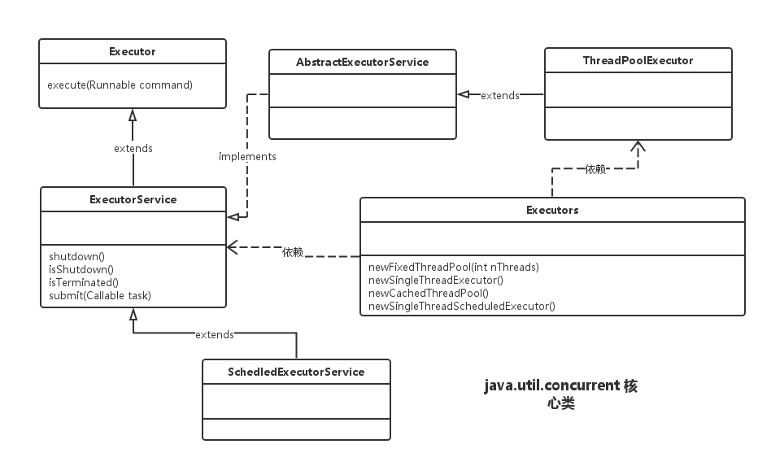

最好是更好的敌人
概述
多线程的软件设计可以最大限度地发挥现代多核处理器的计算能力，提高生产系列的吞吐量和性能。但是，线程过多的话，不但不能达到提高性能的目的，还会是性能严重下降，因为过多的线程是CPU忙于进行线程之间的切换，而没有时间执行其他的任务。
为了避免系统频繁地创建和销毁线程，我们可以让创建的线程进行复用。如果有同学有过数据库开发的经验，对数据库连接池这个概念应该不会陌生。为了避免每次数据库查询都重新建立和销毁数据库连接，我们可以使用数据库连接池维护一些数据库连接，使其长期保持在一个激活的状态。当系统需要使用数据库时，并不是创建一个新的连接，而是从连接池中获得一个可用的连接即可。反之，当需要关闭连接时，并不真的把连接关闭，而是将这个连接“还”给连接池即可。
为了方便我们使用线程池，jdk提供了一套Executor框架，如下图所示：

以上成员均在java.util.concurrent包中，是JDK并发包的核心类。其中ThreadPoolExecutor表示一个线程池。Executors类则扮演线程池工厂角色，通过Executors可以取得一个具有特定功能的线程池。从UML图中亦可知，ThreadPoolExecutor实现了Executor接口，因此通过这个接口，任何Runnable对象都可以被ThreadPoolExecutor线程池调度。
Java提供了ExecutorService的两种实现：
- ThraedPoolExecutor:标准线程池
- ScheduledThreadPoolExecutor:支持延时任务的线程池
Executor框架提供了各种类型的线程池，主要有以下工厂方法。
1 | public static ExecutorService newFixedThreadPool(int nThreads) |
Executors 目前提供了 5 种不同的线程池创建配置：
newCachedThreadPool()，它是一种用来处理大量短时间工作任务的线程池，具有几个鲜明特点：它会试图缓存线程并重用，当无缓存线程可用时，就会创建新的工作线程；如果线程闲置的时间超过60 秒，则被终止并移出缓存；长时间闲置时，这种线程池，不会消耗什么资源。其内部使用 SynchronousQueue 作为工作队列。
newFixedThreadPool(int nThreads)，重用指定数目（nThreads）的线程，其背后使用的是无界的工作队列，任何时候最多有 nThreads个工作线程是活动的。这意味着，如果任务数量超过了活动队列数目，将在工作队列中等待空闲线程出现；如果有工作线程退出，将会有新的工作线程被创建，以补足指定的数目 nThreads。
newSingleThreadExecutor()，它的特点在于工作线程数目被限制为1，操作一个无界的工作队列，所以它保证了所有任务的都是被顺序执行，最多会有一个任务处于活动状态，并且不允许使用者改动线程池实例，因此可以避免其改变线程数目。
newSingleThreadScheduledExecutor() 和 newScheduledThreadPool(int corePoolSize)，创建的是个ScheduledExecutorService，可以进行定时或周期性的工作调度，区别在于单一工作线程还是多个工作线程。
newWorkStealingPool(int parallelism)，这是一个经常被人忽略的线程池，Java 8才加入这个创建方法，其内部会构建ForkJoinPool，利用Work-Stealing算法，并行地处理任务，不保证处理顺序。
线程池的内部实现
无论是newFixedThreadPool()、newSingleThreadExecutor()还是newCacheThreadPool方法，虽然看起来创建的线程具有完全不同的功能特点，但其内部均使用了ThreadPoolExecutor实现。
1 | public static ExecutorService newFixedThreadPool(int nThreads) { |
由以上线程池的实现可以看到，它们都只是ThreadPoolExecutor类的封装。我们看下ThreadPoolExecutor最重要的构造函数：
1 | public ThreadPoolExecutor( |
WorkQueue
workQueue指提交但未执行的任务队列，它是一个BlockingQueue接口的对象，仅用于存放Runnable对象，根据队列功能分类，在ThreadPoolExecutor的构造函数中可使用以下几种BlockingQueue。
- 直接提交的队列：
该功能由synchronousQueue对象提供，synchronousQueue对象是一个特殊的BlockingQueue。synchronousQueue没有容量，每一个插入操作都要等待一个响应的删除操作，反之每一个删除操作都要等待对应的插入操作。如果使用synchronousQueue，提交的任务不会被真实的保存，而总是将新任务提交给线程执行，如果没有空闲线程，则尝试创建线程，如果线程数量已经达到了最大值，则执行拒绝策略，因此，使用synchronousQueue队列，通常要设置很大的maximumPoolSize值，否则很容易执行拒绝策略。
- 有界的任务队列：
有界任务队列可以使用ArrayBlockingQueue实现。ArrayBlockingQueue构造函数必须带有一个容量参数，表示队列的最大容量。
当使用有界任务队列时，若有新任务需要执行时，如果线程池的实际线程数量小于corePoolSize，则会优先创建线程。若大于corePoolSize，则会将新任务加入等待队列。若等待队列已满，无法加入，则在总线程数不大于maximumPoolSize的前提下，创建新的线程执行任务。若大于maximumPoolSize，则执行拒绝策略。可见有界队列仅当在任务队列装满后，才可能将线程数量提升到corePoolSize以上，换言之，除非系统非常繁忙，否则确保核心线程数维持在corePoolSize。
- 无界的任务队列：
无界队列可以通过LinkedBlockingQueue类实现。与有界队列相比，除非系统资源耗尽，无界队列的任务队列不存在任务入队失败的情况。若有新任务需要执行时，如果线程池的实际线程数量小于corePoolSize，则会优先创建线程执行。但当系统的线程数量达到corePoolSize后就不再创建了，这里和有界任务队列是有明显区别的。若后续还有新任务加入，而又没有空闲线程资源，则任务直接进入队列等待。若任务创建和处理的速度差异很大，无界队列会保持快速增长，知道耗尽系统内存。
- 优先任务队列：
带有优先级别的队列，它通过PriorityBlokingQueue实现，可以控制任务执行的优先顺序。它是一个特殊的无界队列。无论是ArrayBlockingQueue还是LinkedBlockingQueue实现的队列，都是按照先进先出的算法处理任务，而PriorityBlokingQueue根据任务自身优先级顺序先后执行，在确保系统性能同时，也能很好的质量保证（总是确保高优先级的任务优先执行）。
自定义线程创建：ThreadFactory
ThreadFactory是一个接口，它只有一个方法，用来创建线程
1 | Thread newThread(Runnable r); |
当线程池需要新建线程时，就会调用这个方法。
自定义线程池可以帮我们做不少事情。我们可以跟踪线程池在何时创建了多少线程，也可以自定义线程的名称、组以及优先级等信息，甚至可以任性地将所有的线程设置为守护线程。总之，使用自定义线程可以让我们更加自由地设置池中所有的线程的状态。下面的案例使用自定义ThreadFactory，一方面记录了线程的创建，另一方面将所有的线程都设置为守护线程，这样，当主线程退出后，将会强制销毁线程池。
1 | public class ThreadFactoryExample { |
扩展线程池
ThreadPoolExecutor是可扩展的，它提供了几个“钩子”方法可以在子类化中改写：beforeExecute、afterExecute和terminated，这些方法可以用于扩展ThreadPoolExecutor的行为。
在执行任务的线程中将调用beforeExecute和afterExecute等方法，在这些方法中还可以添加日志、计时、监视或统计信息收集的功能。无论任务是从run中正常返回，还是抛出一个异常而返回，afterExecute都会被调用。
结语
这里比较粗糙的研究了一下线程池的一些基本的概念和功能。并发的路上还有很多路要走。